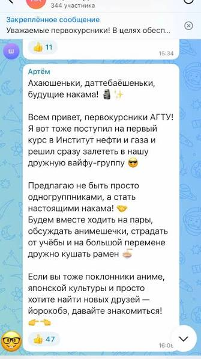

Заявление клиента
«В чате пишут, что пары в пятницу отменяют. Преподаватель говорит, что занятия будут. Найдите, откуда взялся слух»
Дарья Лебедева
Староста группы
Краткие детали
- В чате группы появилось сообщение об отмене пар.
- Преподаватель утверждает, что занятия будут.
- Автор первого сообщения неизвестен.
- Ссылок на деканат никто не привёл.

Проверитьфакты